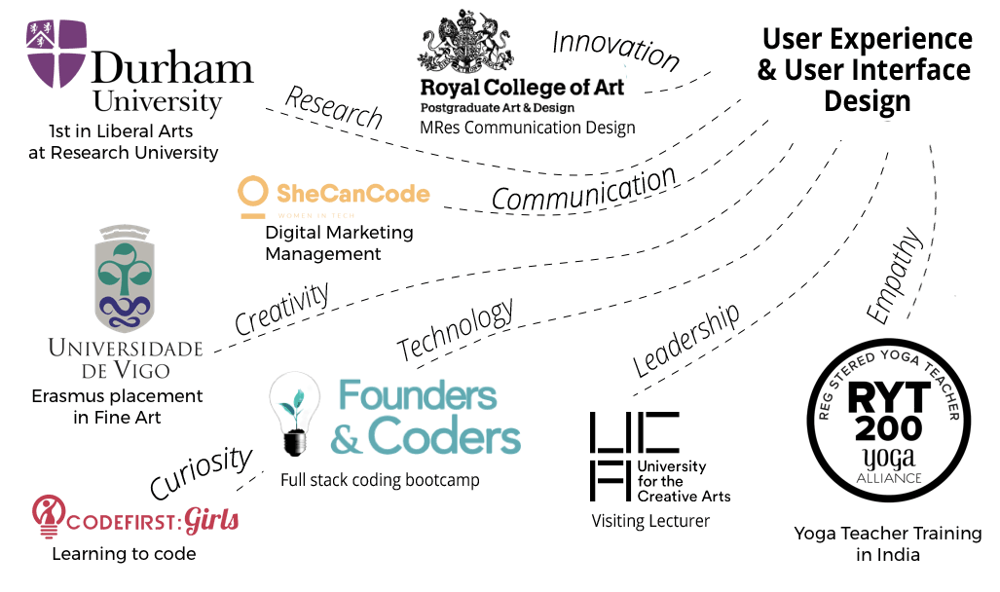

The User Experience (UX) approach to design is practical, based on answering the needs of real people...
My tried and tested approach is:
- User-centred
- Empirical and agile
- Beautifully intuitive
- Holistic and empathetic
- Every stage in the design process is informed by the needs of the user.
- I obtain feedback and make observations via testing, then incorporate learnings as efficiently and effectively as possible.
- A self-taught coder and artist at heart, I am able to respond intelligently and sensitively to both technological and aesthetic requirements.
- I think about design in terms of crafting a dynamic experience, rather than a static thing, syncing with the user's lifestyle, thoughts, feelings, and sensations. My ultimate aim is to help create something that seamlessly resonates with their identity,
and the way they perceive or experience the world, perhaps sparking a moment of joy.
My Skills and Experience
Still here?
I love to work on design projects. I love to facilitate UX workshops for professional teams who need to refocus. And I love to teach on degree level courses.
My curiosity about design fundamentally stems from curiosity about human nature and how we interact with the world. As an alumna at Durham University, my research projects centred on media, culture, and identity.
Thanks to a lot of hard work, I earned a First Class BA in Philosophy ⚖, French 🇫🇷 and Spanish 🇪🇸 (with distinctions in both spoken languages). So I'm pretty good at critical thinking and communicating.
Now at the Royal College of Art, my Masters in Research involves rethinking design, using the practical philosophy of yoga for inspiration.
Why yoga? Well, the mind-body practice has been helping people worldwide to live more consciously for thousands of years. In the West we tend to emphasise the physical aspects of yoga, which is just the tip of the iceberg. As a part-time yoga teacher, I believe that ethical and metaphysical aspects of yoga could inform a unique approach to interaction design that is exceptionally creative and mindful.
Feel free to bookmark my CV, follow me on GitHub, add me on LinkedIn, or skim my published writings.